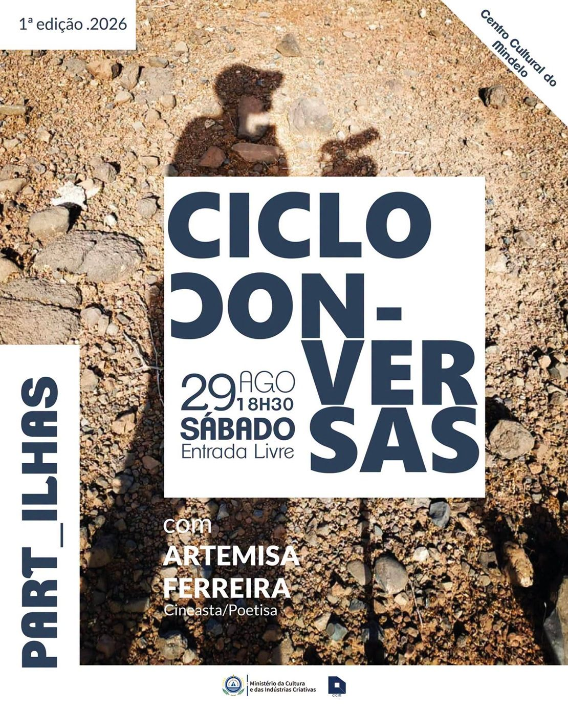

Centro Cultural do Mindelo
PART_ILHAS — ciclo de conversas com Artemisa Ferreira
- Date
- Saturday, 29 August 2026 · 18:30
- Guest
- Artemisa Ferreira · Filmmaker and poet
- Where
- Centro Cultural do Mindelo · Avenida Marginal, Mindelo, São Vicente
- Admission
- Free admission
Details
PART_ILHAS is a creative-conversation series. This edition with Artemisa Ferreira focuses on image, intention and creative process, including what images reveal or leave unsaid and the relationship between scenes, silence and creation.
Good to know
Confirm current access information with Centro Cultural do Mindelo before attending.
Checked 29 August 2026 against the current official event pages.
See official event page